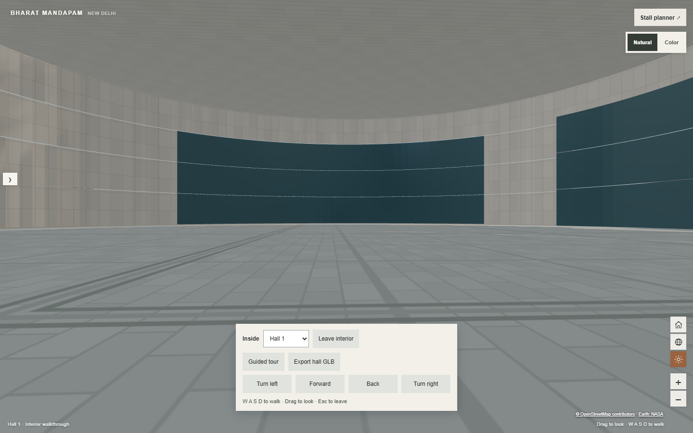
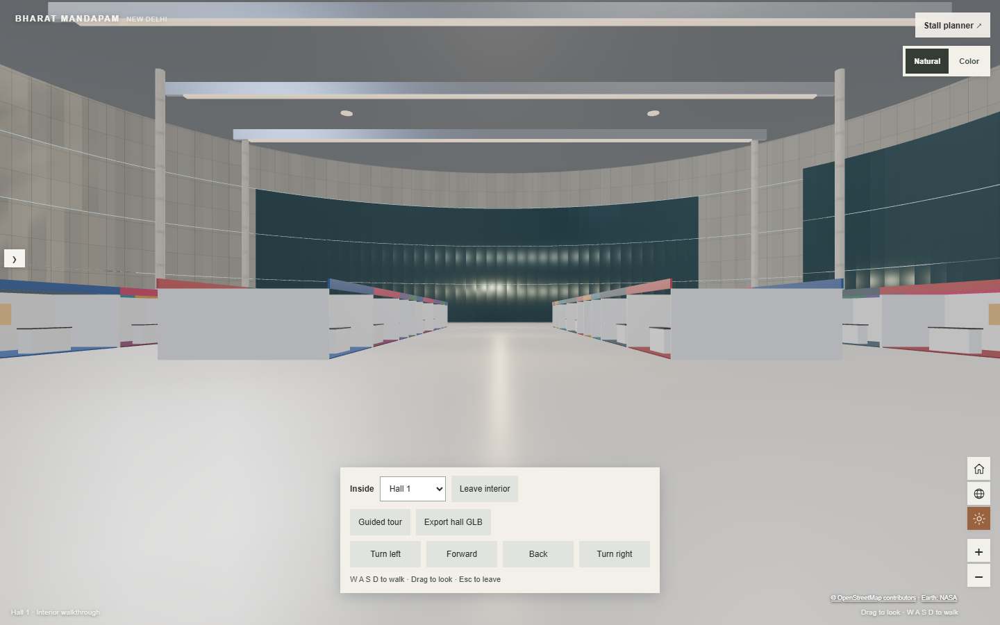

INSPECTION & DELIVERY · 9 OCTOBER 2026
Bharat Mandapam interiors, fitted to the existing 3D venue
Thirteen reusable GLB components were extracted; nine are integrated into Halls 1–5 and 14. The existing building shell remains intact. Walkthrough controls, guided routes, automatic roof cutaways, night lighting and hall GLB export are implemented in the viewer.
Open the local integrated viewer · Complete source inventory · Per-hall component inventory · Extraction provenance
The file contains six exhibition halls, plus foyer and plenary interiors. It has no cameras and no animations. The file alone cannot establish which two spaces the original viewer presented, or reproduce that viewer’s tour. This furnishing layout is an adaptation to the current model’s geometry, not a surveyed or approved event plan.
Before and after
Hall 1 uses the same camera and daylight settings in both images. “Before” hides the added interior layer; the new navigation controls remain visible for the controlled comparison.

Before · original shell
After · extracted fittings and adapted decksWhat the actual GLB contains
bharat-mandapam-default.glb: 25,396,940 bytes; glTF 2.0, THREE.GLTFExporter r186. 265 nodes, 217 meshes, 95 materials, 18 embedded PNG textures, 11 point lights. There are 256,102 mesh triangles before GPU instancing; 118,362 belong to the Interior group.
Hall identification and dimensions
Source coordinates below are X/Z bounds from the six floor components. Pad counts are geometric observations, not editable stall identifiers. Destination dimensions are inset oriented roof bounding rectangles; polygon boundaries constrain placement.
The destination interior ceiling is 24 m in the model. Measured centres, rotations and entrance centroids and contained/crossing components per source hall are recorded separately. Foyer and plenary interiors are centred around the source origin; their seating/stage assets are retained in the reusable library rather than placed in exhibition halls.
Reusable component inventory · 13 GLBs
| Component | Bytes | Triangles | Use |
|---|
| stand-island | 206,572 | 1,728 | Integrated |
| reception-counter | 5,008 | 24 | Integrated |
| ceiling-light | 10,292 | 80 | Integrated |
| steel-beam | 2,692 | 12 | Integrated |
| stone-column | 69,484 | 64 | Integrated |
| floor-deck | 2,652 | 12 | Integrated |
| ceiling-deck | 2,756 | 12 | Integrated |
| linear-light | 2,868 | 12 | Integrated |
| exit-sign | 13,796 | 12 | Library only |
| fire-door | 7,284 | 36 | Library only |
| stage | 8,536 | 38 | Library only |
| plenary-seating | 1,315,244 | 12,120 | Library only |
| hall-point-light | 752 | 0 | Integrated |
The full kit is 1,647,936 bytes. Runtime loads only nine components, totalling 303,076 bytes. The manifest records original node and connected-component indices and extraction anchors for every mesh.
At least 89 source mesh nodes contain multiple disconnected pieces. Extraction selects whole connected components by spatial bounds and recentres their source transforms. Position welding at 0.0001-unit precision is used only to find connectivity; output vertices/UV seams remain intact. Triangles and raw attributes are copied, indices remapped, and original embedded images preserved. Fused stand walls are deliberately extracted as an entire row.
Adapted and newly implemented
Layout: Existing hall roofs define each convex footprint and orientation. Source stand rows and counters retain their dimensions; placement rejects overlap and keeps a 3 m perimeter clearance and a clear central aisle. Floor and ceiling panels follow the inset polygon. Beams, columns and fixtures are repeated to fit. No source exterior shell replaces the current building.
Walkthrough and tour: Choose a hall, then Enter hall or Guided tour. Use W/A/S/D, arrow keys, drag-to-look, wheel or touch buttons; Escape leaves. The camera is 1.7 m above the interior floor with a 0.08 m near plane. Collision boundaries cover added obstacles and the hall perimeter. Each guided route travels through the clear central aisle with pause/resume. It starts inside the hall; it does not simulate walking through an opening or animate existing doors. Roof and ceiling cutaways reveal the interior when zooming down from above.
Night: One extracted warm point light per hall is supplemented by three runtime fill lights. Only the active/nearby hall’s four lights are enabled. Emissive fixtures brighten at night; exterior sun, ambient/environment intensity, exposure and background also change. Shared geometry/materials, a 303 KB runtime kit, no added shadow maps and disabled exterior ambient-occlusion processing during interior walking limit overhead. No portable FPS guarantee is claimed.
Planner and export: Interior scenery is separate from editable stall/layout state. Existing editing and save contracts remain intact; extracted stands are decorative scene assets, not automatically converted into bookable stalls. Export hall GLB includes the selected original shell, fitted interior, materials/textures, four lights and layout metadata. Runtime controls, collision and guided-route behaviour remain JavaScript and are not baked into the GLB.
Earlier exhibition-hall verification
These checks predate the Convention Centre and menu changes. See the CC and navigation addendum for the current delivery and verification limits. Tests and builds were stopped at the user's request; the final navigation changes have not been rerun.
Production build and TypeScript check passed. Five focused integration checks passed: asset/buffer/UV/provenance integrity; all six destination footprints; browser walkthrough/tour/night/mobile/export; failed-asset recovery; planner edit/save/reload API contract. Five existing checks also passed for geometry batching, floor visibility, open-side editing, split/reload and save-rejection handling. Export was parsed to verify textures, geometry, four lights, obstacle separation and a clear central aisle. All six halls were captured and visually checked.
The local backend was unavailable. Save and reload were verified with mocked API responses; a real database round trip remains unverified. The production build reports existing CSS budget and polygon-clipping CommonJS warnings. The original reference file and destination building GLB remain unchanged.
Additional views